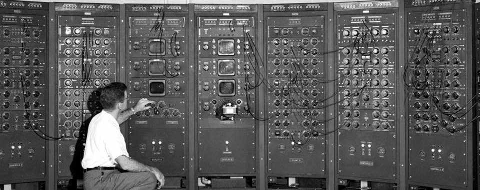

Pierwszym w historii komputerem był ENIAC. Było to już ponad 70 lat temu! Komputer został zaprojektowany w 1945 roku przez naukowców z Uniwersytetu w Pensylwanii. Publicznie zaprezentowano go już rok później na Uniwersytecie w Princeton. Jak nietrudno zgadnąć, ENIAC nie miał jakichś szczególnie, jak na dzisiejsze standardy wysokich osiągów. Pracował z taktowaniem zaledwie 0,1 MHz, to w tamtych czasach robiło olbrzymie wrażenie. Dla porównania nawet proste współcześnie stosowane smartfony są około 50 tysięcy razy szybsze! Do wykonania ENIACA konieczne było zastosowanie ponad 70 tysięcy rezystorów, 1500 przekaźników, 10 tysięcy kondensatorów oraz 6 tysięcy ręcznych przełączników. Do sprawnej obsługi ENIACA potrzebny był też cały sztab ludzi. Sam komputer zajmował też bardzo dużo miejsca, bo aż 167 m2 powierzchni. Miał 2,4 m wysokości i aż 24 metry długości. Ważył również niemało, bo aż 27 ton. Co ciekawe stworzono go z myślą o ułatwieniu produkcji tablic balistycznych. Jego koszt sięgnął około 6 milionów dolarów.Przez wiele kolejnych lat komputery oczywiście coraz bardziej rozwijano, aż udało się dotrzeć do ery komputerów domowych.
